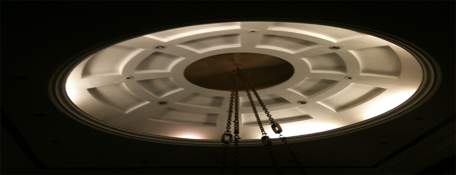

About R.S Enterprises
We are one of the passionate interior decorators based in Mayiladuthurai. R.S Enterprises was seeded in the year 2003, Since then we are serving the people with our sheer knowledge in the field with a professional touch. We are creative, innovative and a well qualified team who works great to satisfy the customers. Because of the lineament and involvement in our work we are grown rapidly and emerged as the leader in Mayiladuthurai and surroundings. We are the dealers of Asian Paints, Dulux Paints, Sanit Gobain Gyproc Gypsum Boards and we are manufacturing cornices for Interior decoration. We deal with all kinds of Interior design and decoration, Aluminium Composite panelling, Thermal Insulation, Vinyl Flooring, Wooden Flooring, Wall Partitioning.
About Er. Kannan
Er. Kannan Muthuvel is the founder of R.S Enterprises. He started R.S Enterprises with confidence and self-belief as the investment. He acquired distinction in his Bachelor studies in Civil Engineering. He started his career as a trainee Engineer in chennai in the year 1992. After gaining some experience he has moved to Maldives and continued working there for some years. In the year 2003 he seeded this firm and with his hard work and fascination towards the work the firm has grown up in a rapid phase. He started the first interior design outlet of R.S Enterprises in Karaikal followed by Mayiladuthurai and Chidhambaram outlet.
Dealers of
Click here for our outlets
R.S Enterprises,
No 7, Cauvery View Complex,
Palakarai,
Mayiladuthurai -01
R.S Enterprises,
B.O : 581/2, Bharathiar road,
Thalatheru,
Karaikal - 05
R.S Enterprises,
Mayiladuthurai road,
Vibheesnapuram,
Chidhambaram - 02